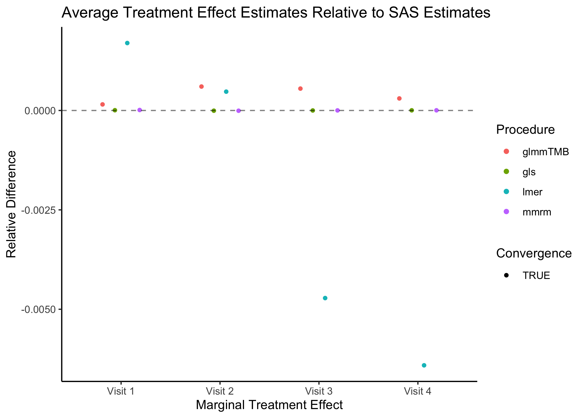
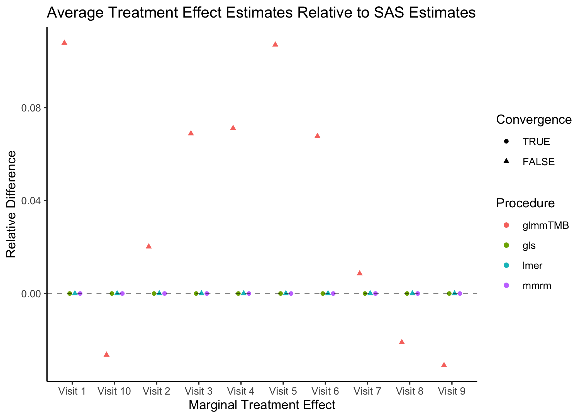
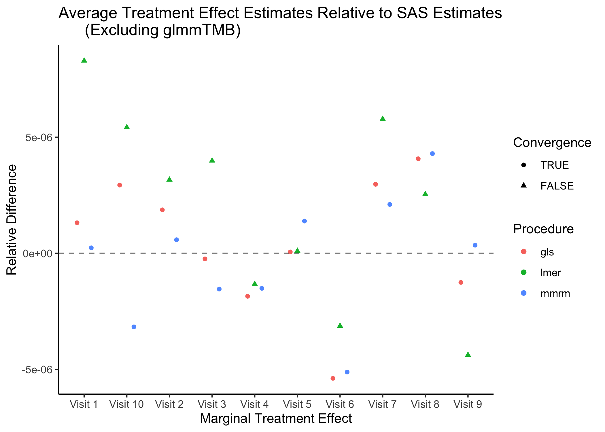
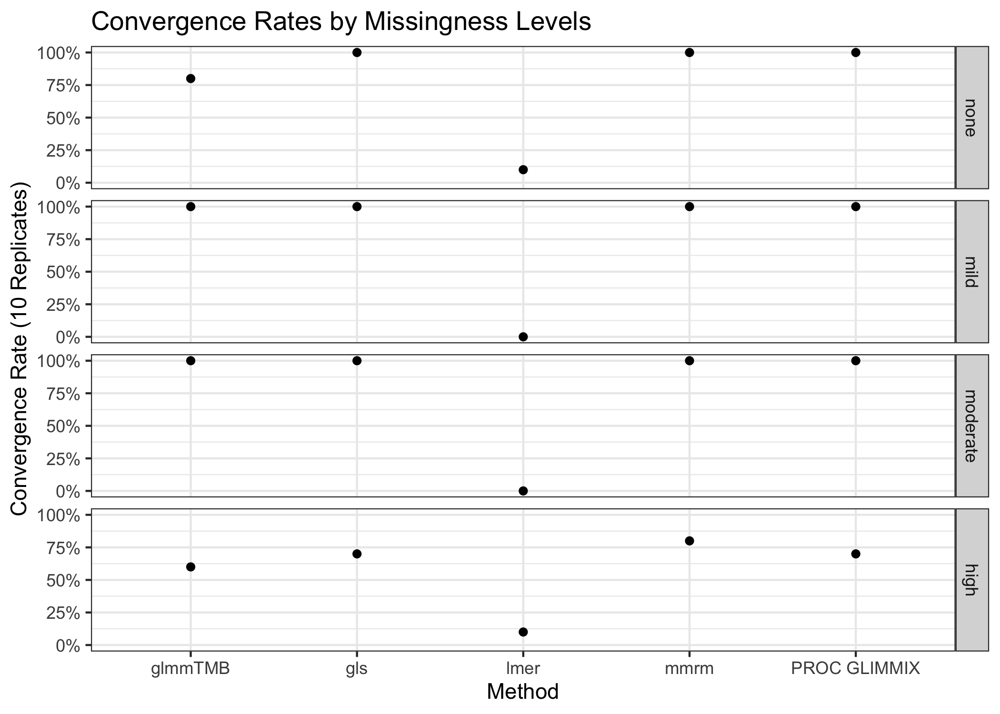

| Implementation | Median | First Quartile | Third Quartile |
|---|---|---|---|
| mmrm | 56.15 | 55.76 | 56.30 |
| PROC GLIMMIX | 100.00 | 100.00 | 100.00 |
| lmer | 247.02 | 245.25 | 257.46 |
| gls | 687.63 | 683.50 | 692.45 |
| glmmTMB | 715.90 | 708.70 | 721.57 |
R vs SAS MMRM
Introduction
In this vignette we briefly compare the mmrm::mmrm, SAS’s PROC GLIMMIX, nlme::gls, lme4::lmer, and glmmTMB::glmmTMB functions for fitting mixed models for repeated measures (MMRMs). A primary difference in these implementations lies in the covariance structures that are supported “out of the box”. In particular, PROC GLIMMIX and mmrm are the only procedures which provide support for many of the most common MMRM covariance structures. Most covariance structures can be implemented in gls, though users are required to define them manually. lmer and glmmTMB are more limited. We find that mmmrm converges more quickly than other R implementations while also producing estimates that are virtually identical to PROC GLIMMIX’s.
Datasets
Two datasets are used to illustrate model fitting with the mmrm, lme4, nlme, glmmTMB R packages as well as PROC GLIMMIX. These data are also used to compare these implementations’ operating characteristics.
FEV Data
The FEV dataset contains measurements of FEV1 (forced expired volume in one second), a measure of how quickly the lungs can be emptied. Low levels of FEV1 may indicate chronic obstructive pulmonary disease (COPD). It is summarized below.
Stratified by ARMCD
Overall PBO TRT
n 800 420 380
USUBJID (%)
PT[1-200] 200 105 (52.5) 95 (47.5)
AVISIT
VIS1 200 105 95
VIS2 200 105 95
VIS3 200 105 95
VIS4 200 105 95
RACE (%)
Asian 280 (35.0) 152 (36.2) 128 (33.7)
Black or African American 300 (37.5) 184 (43.8) 116 (30.5)
White 220 (27.5) 84 (20.0) 136 (35.8)
SEX = Female (%) 424 (53.0) 220 (52.4) 204 (53.7)
FEV1_BL (mean (SD)) 40.19 (9.12) 40.46 (8.84) 39.90 (9.42)
FEV1 (mean (SD)) 42.30 (9.32) 40.24 (8.67) 44.45 (9.51)
WEIGHT (mean (SD)) 0.52 (0.23) 0.52 (0.23) 0.51 (0.23)
VISITN (mean (SD)) 2.50 (1.12) 2.50 (1.12) 2.50 (1.12)
VISITN2 (mean (SD)) -0.02 (1.03) 0.01 (1.07) -0.04 (0.98)BCVA Data
The BCVA dataset contains data from a randomized longitudinal ophthalmology trial evaluating the change in baseline corrected visual acuity (BCVA) over the course of 10 visits. BCVA corresponds to the number of letters read from a visual acuity chart. A summary of the data is given below:
Stratified by ARMCD
Overall CTL TRT
n 8605 4123 4482
USUBJID (%)
PT[1-1000] 1000 494 (49.4) 506 (50.6)
AVISIT
VIS1 983 482 501
VIS2 980 481 499
VIS3 960 471 489
VIS4 946 458 488
VIS5 925 454 471
VIS6 868 410 458
VIS7 816 388 428
VIS8 791 371 420
VIS9 719 327 392
VIS10 617 281 336
RACE (%)
Asian 297 (29.7) 151 (30.6) 146 (28.9)
Black or African American 317 (31.7) 149 (30.1) 168 (33.2)
White 386 (38.6) 194 (39.3) 192 (37.9)
BCVA_BL (mean (SD)) 75.12 (9.93) 74.90 (9.76) 75.40 (10.1)
BCVA_CHG (mean (SD))
VIS1 5.59 (1.31) 5.32 (1.23) 5.86 (1.33)
VIS10 9.18 (2.91) 7.49 (2.58) 10.60 (2.36)Model Implementations
Listed below are some of the most commonly used covariance structures used when fitting MMRMs. We indicate which matrices are available “out of the box” for each implementation considered in this vignette. Note that this table is not exhaustive; PROC GLIMMIX and glmmTMB support additional spatial covariance structures.
| Covariance structures | mmrm |
PROC GLIMMIX |
gls |
lmer |
glmmTMB |
|---|---|---|---|---|---|
| Ante-dependence (heterogeneous) | X | X | |||
| Ante-dependence (homogeneous) | X | ||||
| Auto-regressive (heterogeneous) | X | X | X | ||
| Auto-regressive (homogeneous) | X | X | X | X | |
| Compound symmetry (heterogeneous) | X | X | X | X | |
| Compound symmetry (homogeneous) | X | X | X | ||
| Spatial exponential | X | X | X | X | |
| Toeplitz (heterogeneous) | X | X | X | ||
| Toeplitz (homogeneous) | X | X | |||
| Unstructured | X | X | X | X | X |
Code for fitting MMRMs to the FEV data using each of the considered functions and covariance structures are provided below. Fixed effects for the visit number, treatment assignment and the interaction between the two are modeled.
Ante-dependence (heterogeneous)
PROC GLIMMIX
PROC GLIMMIX DATA = fev_data;
CLASS AVISIT(ref = 'VIS1') ARMCD(ref = 'PBO') USUBJID;
MODEL FEV1 = AVISIT|ARMCD / ddfm=satterthwaite solution chisq;
RANDOM AVISIT / subject=USUBJID type=ANTE(1);
mmrm
mmrm(
formula = FEV1 ~ ARMCD * AVISIT + adh(VISITN | USUBJID),
data = fev_data
)
Ante-dependence (homogeneous)
mmrm
mmrm(
formula =FEV1 ~ ARMCD * AVISIT + ad(VISITN | USUBJID),
data = fev_data
)
Auto-regressive (heterogeneous)
PROC GLIMMIX
PROC GLIMMIX DATA = fev_data;
CLASS AVISIT(ref = 'VIS1') ARMCD(ref = 'PBO') USUBJID;
MODEL FEV1 = AVISIT|ARMCD / ddfm=satterthwaite solution chisq;
RANDOM AVISIT / subject=USUBJID type=ARH(1);
mmrm
mmrm(
formula = FEV1 ~ ARMCD * AVISIT + ar1h(VISITN | USUBJID),
data = fev_data
)
gls
gls(
formula = FEV1 ~ ARMCD * AVISIT,
data = fev_data,
correlation = corCAR1(form = ~AVISIT | USUBJID),
weights = varIdent(form = ~1|AVISIT),
na.action = na.omit
)
Auto-regressive (homogeneous)
PROC GLIMMIX
PROC GLIMMIX DATA = fev_data;
CLASS AVISIT(ref = 'VIS1') ARMCD(ref = 'PBO') USUBJID;
MODEL FEV1 = ARMCD|AVISIT / ddfm=satterthwaite solution chisq;
RANDOM AVISIT / subject=USUBJID type=AR(1);
mmrm
mmrm(
formula = FEV1 ~ ARMCD * AVISIT + ar1(VISITN | USUBJID),
data = fev_data
)
gls
gls(
formula = FEV1 ~ ARMCD * AVISIT,
data = fev_data,
correlation = corCAR1(form = ~AVISIT | USUBJID),
na.action = na.omit
)
glmmTMB
glmmTMB(
FEV1 ~ ARMCD * AVISIT + ar1(0 + AVISIT | USUBJID),
dispformula = ~ 0,
data = fev_data
)
Compound symmetry (heterogeneous)
PROC GLIMMIX
PROC GLIMMIX DATA = fev_data;
CLASS AVISIT(ref = 'VIS1') ARMCD(ref = 'PBO') USUBJID;
MODEL FEV1 = AVISIT|ARMCD / ddfm=satterthwaite solution chisq;
RANDOM AVISIT / subject=USUBJID type=CSH;
mmrm
mmrm(
formula = FEV1 ~ ARMCD * AVISIT + csh(VISITN | USUBJID),
data = fev_data
)
gls
gls(
formula = FEV1 ~ ARMCD * AVISIT,
data = fev_data,
correlation = corCompSymm(form = ~AVISIT | USUBJID),
weights = varIdent(form = ~1|AVISIT),
na.action = na.omit
)
glmmTMB
glmmTMB(
FEV1 ~ ARMCD * AVISIT + cs(0 + AVISIT | USUBJID),
dispformula = ~ 0,
data = fev_data
)
Compound symmetry (homogeneous)
PROC GLIMMIX
PROC GLIMMIX DATA = fev_data;
CLASS AVISIT(ref = 'VIS1') ARMCD(ref = 'PBO') USUBJID;
MODEL FEV1 = AVISIT|ARMCD / ddfm=satterthwaite solution chisq;
RANDOM AVISIT / subject=USUBJID type=CS;
mmrm
mmrm(
formula = FEV1 ~ ARMCD * AVISIT + cs(VISITN | USUBJID),
data = fev_data
)
gls
gls(
formula = FEV1 ~ ARMCD * AVISIT,
data = fev_data,
correlation = corCompSymm(form = ~AVISIT | USUBJID),
na.action = na.omit
)
Spatial exponential
PROC GLIMMIX
PROC GLIMMIX DATA = fev_data;
CLASS AVISIT(ref = 'VIS1') ARMCD(ref = 'PBO') USUBJID;
MODEL FEV1 = AVISIT|ARMCD / ddfm=satterthwaite solution chisq;
RANDOM / subject=USUBJID type=sp(exp)(visitn) rcorr;
mmrm
mmrm(
formula = FEV1 ~ ARMCD * AVISIT + sp_exp(VISITN | USUBJID),
data = fev_data
)
gls
gls(
formula = FEV1 ~ ARMCD * AVISIT,
data = fev_data,
correlation = corExp(form = ~AVISIT | USUBJID),
weights = varIdent(form = ~1|AVISIT),
na.action = na.omit
)
glmmTMB
# NOTE: requires use of coordinates
glmmTMB(
FEV1 ~ ARMCD * AVISIT + exp(0 + AVISIT | USUBJID),
dispformula = ~ 0,
data = fev_data
)
Toeplitz (heterogeneous)
PROC GLIMMIX
PROC GLIMMIX DATA = fev_data;
CLASS AVISIT(ref = 'VIS1') ARMCD(ref = 'PBO') USUBJID;
MODEL FEV1 = AVISIT|ARMCD / ddfm=satterthwaite solution chisq;
RANDOM AVISIT / subject=USUBJID type=TOEPH;
mmrm
mmrm(
formula = FEV1 ~ ARMCD * AVISIT + toeph(AVISIT | USUBJID),
data = fev_data
)
glmmTMB
glmmTMB(
FEV1 ~ ARMCD * AVISIT + toep(0 + AVISIT | USUBJID),
dispformula = ~ 0,
data = fev_data
)
Toeplitz (homogeneous)
PROC GLIMMIX
PROC GLIMMIX DATA = fev_data;
CLASS AVISIT(ref = 'VIS1') ARMCD(ref = 'PBO') USUBJID;
MODEL FEV1 = AVISIT|ARMCD / ddfm=satterthwaite solution chisq;
RANDOM AVISIT / subject=USUBJID type=TOEP;
mmrm
mmrm(
formula = FEV1 ~ ARMCD * AVISIT + toep(AVISIT | USUBJID),
data = fev_data
)
Unstructured
PROC GLIMMIX
PROC GLIMMIX DATA = fev_data;
CLASS AVISIT(ref = 'VIS1') ARMCD(ref = 'PBO') USUBJID;
MODEL FEV1 = ARMCD|AVISIT / ddfm=satterthwaite solution chisq;
RANDOM AVISIT / subject=USUBJID type=un;
mmrm
mmrm(
formula = FEV1 ~ ARMCD * AVISIT + us(AVISIT | USUBJID),
data = fev_data
)
gls
gls(
formula = FEV1 ~ ARMCD * AVISIT,
data = fev_data,
correlation = corSymm(form = ~AVISIT | USUBJID),
weights = varIdent(form = ~1|AVISIT),
na.action = na.omit
)
lmer
lmer(
FEV1 ~ ARMCD * AVISIT + (0 + AVISIT | USUBJID),
data = fev_data,
control = lmerControl(check.nobs.vs.nRE = "ignore"),
na.action = na.omit
)
glmmTMB
glmmTMB(
FEV1 ~ ARMCD * AVISIT + us(0 + AVISIT | USUBJID),
dispformula = ~ 0,
data = fev_data
)
Benchmarking
Next, the MMRM fitting procedures are compared using the FEV and BCVA datasets. FEV1 measurements are modeled as a function of race, treatment arm, visit number, and the interaction between the treatment arm and the visit number. Change in BCVA is assumed to be a function of race, baseline BCVA, treatment arm, visit number, and the treatment–visit interaction. In both datasets, repeated measures are modeled using an unstructured covariance matrix. The implementations’ convergence times are evaluated first, followed by a comparison of their estimates. Finally, we fit these procedures on simulated BCVA-like data to assess the impact of missingness on convergence rates.
Convergence Times
FEV Data
The mmrm, PROC GLIMMIX, gls, lmer, and glmmTMB functions are applied to the FEV dataset 10 times. The convergence times are recorded for each replicate and are reported in the table below.
It is clear from these results that mmrm converges significantly faster than other R functions. Though not demonstrated here, this is generally true regardless of the sample size and covariance structure used. mmrm is faster than PROC GLIMMIX.
BCVA Data
The MMRM implementations are now applied to the BCVA dataset 10 times. The convergence times are presented below.
| Implementation | Median | First Quartile | Third Quartile |
|---|---|---|---|
| mmrm | 3.36 | 3.32 | 3.46 |
| glmmTMB | 18.65 | 18.14 | 18.87 |
| PROC GLIMMIX | 36.25 | 36.17 | 36.29 |
| gls | 164.36 | 158.61 | 165.93 |
| lmer | 165.26 | 157.46 | 166.42 |
We again find that mmrm produces the fastest convergence times on average.
Marginal Treatment Effect Estimates Comparison
We next estimate the marginal mean treatment effects for each visit in the FEV and BCVA datasets using the MMRM fitting procedures. All R implementations’ estimates are reported relative to PROC GLIMMIX’s estimates. Convergence status is also reported.
FEV Data

The R procedures’ estimates are very similar to those output by PROC GLIMMIX, though mmrm and gls generate the estimates that are closest to those produced when using SAS. All methods converge using their default optimization arguments.
BCVA Data


mmrm, gls and lmer produce estimates that are virtually identical to PROC GLIMMIX’s, while glmmTMB does not. This is likely explained by glmmTMB’s failure to converge. Note too that lmer fails to converge.
Impact of Missing Data on Convergence Rates
The results of the previous benchmark suggest that the amount of patients missing from later time points affect certain implementations’ capacity to converge. We investigate this further by simulating data using a data-generating process similar to that of the BCVA datasets, though with various rates of patient dropout.
Ten datasets of 200 patients are generated each of the following levels of missingness: none, mild, moderate, and high. In all scenarios, observations are missing at random. The number patients observed at each visit is obtained for one replicated dataset at each level of missingness is presented in the table below.
| none | mild | moderate | high | |
|---|---|---|---|---|
| VIS01 | 200 | 196.7 | 197.6 | 188.1 |
| VIS02 | 200 | 195.4 | 194.4 | 182.4 |
| VIS03 | 200 | 195.1 | 190.7 | 175.2 |
| VIS04 | 200 | 194.1 | 188.4 | 162.8 |
| VIS05 | 200 | 191.6 | 182.5 | 142.7 |
| VIS06 | 200 | 188.2 | 177.3 | 125.4 |
| VIS07 | 200 | 184.6 | 168.0 | 105.9 |
| VIS08 | 200 | 178.5 | 155.4 | 82.6 |
| VIS09 | 200 | 175.3 | 139.9 | 58.1 |
| VIS10 | 200 | 164.1 | 124.0 | 39.5 |
The convergence rates of all implementations for stratified by missingness level is presented in the plot below.

mmrm, gls, and PROC GLIMMIX are resilient to missingness, only exhibiting some convergence problems in the scenarios with the most missingness. These implementations converged in all the other scenarios’ replicates. glmmTMB, on the other hand, has convergence issues in the no-, mild-, and high-missingness datasets, with the worst convergence rate occurring in the datasets with the most dropout. Finally, lmer is unreliable in all scenarios, suggesting that it’s convergence issues stem from something other than the missing observations.
Note that the default optimization schemes are used for each method; these schemes can be modified to potentially improve convergence rates.
A more comprehensive simulation study using data-generating processes similar to the one used here is outlined in the simulations/missing-data-benchmarks subdirectory. In addition to assessing the effect of missing data on software convergence rates, we also evaluate these methods’ fit times and empirical bias, variance, 95% coverage rates, type I error rates and type II error rates. mmrm is found to be the most most robust software for fitting MMRMs in scenarios where a large proportion of patients are missing from the last time points. Additionally, mmrm has the fastest average fit times regardless of the amount of missingness. All implementations considered produce similar empirical biases, variances, 95% coverage rates, type I error rates and type II error rates.